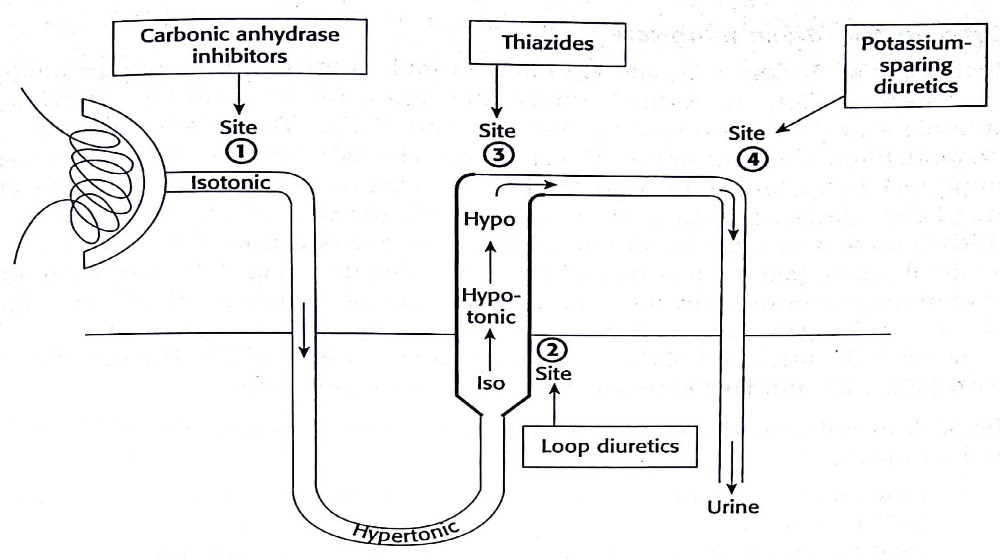

🧠
Topic 01
Renal Pharmacology
01
Learning Objectives
By the end of this discussion the student should be able to;
Objectives
- State the functions of the renal system
- Describe the various drugs that acts on the renal system and their therapeutic effects.
02
Functions of the Kidney
- Regulatory function;- acid-base, fluid and electrolyte balance.
- Excretory function;- elimination of nitrogenous waste products
- Hormonal function;- production of renin, erythropoietin, activation of vitamin D.
03
Mechanism of Urine Formation
- Glomerular filtration
- Tubular reabsorption
- Active tubular secretion
04
Diuretics
- Increase excretion of water and sodium
Excretion of water and sodium is achieved through;-
- Direct action on the cells of the nephron
- Indirectly by modifying the content of the filtrate.
